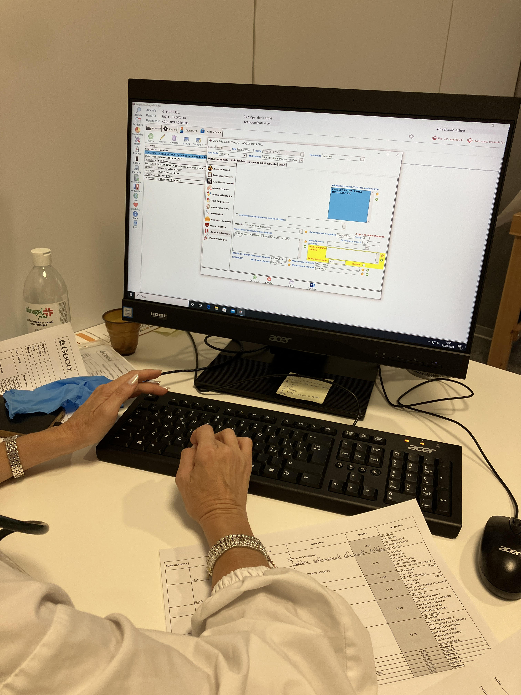
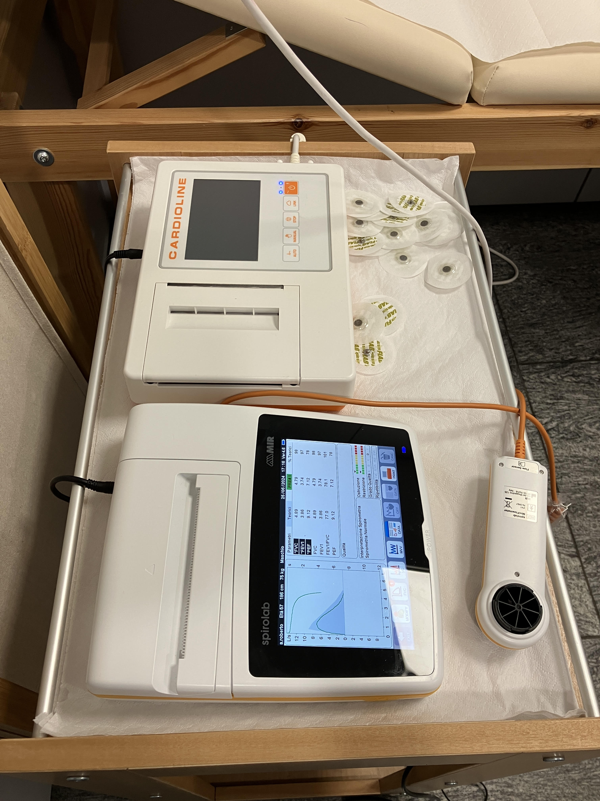

Medicina del Lavoro e Gestione Aziendale

Tutela della salute nei luoghi di lavoro e amministrazione aziendale
Il percorso ha offerto una panoramica completa sulla sicurezza sul lavoro e sulla medicina preventiva aziendale. Ho assistito il Medico Competente durante le visite periodiche di sorveglianza sanitaria dei dipendenti, imparando i protocolli di anamnesi clinica e i parametri fondamentali.

monitor_heart Diagnostica e Procedure Cliniche
Ho appreso le procedure di misurazione della pressione arteriosa e della saturazione, e assistito all'esecuzione di esami diagnostici chiave come spirometrie, audiometrie ed elettrocardiogrammi (ECG), comprendendo la corretta gestione e catalogazione delle provette per i prelievi ematici.
business_center Gestione Amministrativa
All'attività clinica si è affiancata quella gestionale: ho curato la pianificazione dei promemoria aziendali, l'archiviazione delle Carte Qualifica Conducenti (CQC), l'elaborazione di fatture e l'utilizzo di funzionalità digitali avanzate (come la stampa unione). Ho infine partecipato a sopralluoghi ispettivi direttamente nei luoghi di lavoro insieme al medico e ai datori di lavoro.